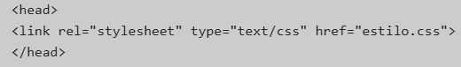
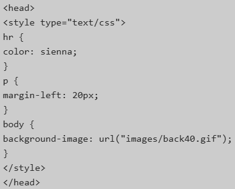
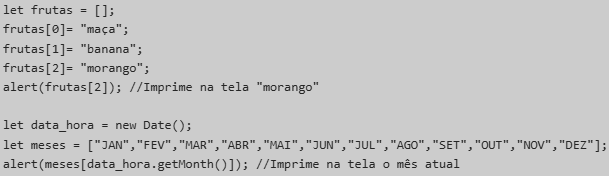

Programação Web
Unidade 1
Conceitos do HTML
- Ambiente Cliente/Servidor: é uma estrutura de rede que separa os dados e o processamento de recursos. Nessa estrutura, um programa de computador, chamado cliente, solicita um recurso ou serviço a outro programa, o servidor, que responde com as informações solicitadas.

- Elementos utilizados pelo Cliente / usado pelo Servidor
Cliente:
- HTML (do Inglês: Hyper Text Markup Language. No Português: Linguagem de Marcação de Hipertexto): é uma linguagem de marcação que serve para criar a estrutura e o conteúdo de páginas web.
- CSS (Folha de Estilo em Cascatas): é um código em que você pode fazer alterações rápidas de layout, como definição de cores e fontes.
- JavaScript: é uma linguagem de programação que permite a criação de páginas web interativas, adicionando comportamento dinâmico a sites.
- XML (Extensible Markup Language): permite definir e armazenar dados de maneira compartilhável.
Servidor:
- Banco de dados: é um lugar onde você guarda os dados que precisa para o seu software, como nomes, endereços, preços, pedidos, etc. Um banco de dados é feito de tabelas, que são como planilhas, onde cada linha é um registro e cada coluna é um campo.
- JSP (JavaServer Pages): é uma tecnologia de programação web que permite criar páginas dinâmicas usando a linguagem Java.
- ASP.NET: é uma tecnologia da Microsoft que permite a criação de aplicações web dinâmicas e interativas. O ASP.NET é baseado no Framework .NET, que oferece cerca de 3000 classes para serem utilizadas nas aplicações.
- O que é HTML?
- A World Wide Web (Web ou "www") é uma rede de recursos e serviços de informação.
- Ela serve-se de três mecanismos, de modo a fazer com que esses recursos estejam legivelmente disponíveis à audiência mais vasta possível:
- Um esquema uniforme de atribuição de nomes, de forma a se localizar os recursos na Web (ex.: URIs);
- Protocolos, para o acesso aos recursos nomeados através da Web (ex.: HTTP);
- Hipertexto, para uma navegação mais fácil através dos referidos recursos (ex.: HTML);
- Os laços entre os três mecanismos evidenciam-se através desta especificação.
- Introdução ao URL
- Todos os recursos disponíveis na Web possuem um endereço, o qual poderá ser codificado por um Identificador de Recursos Universal, ou "URI" (Universal Resource Identifier).
- Os URIs são de uma forma geral constituídos por três partes:
- O esquema de nomeação do mecanismo usado para se ter acesso ao recurso;
- O nome da máquina de hospedagem desse recurso;
- O nome do próprio recurso, atribuído na qualidade de trajeto (path).
Por exemplo:
- No HTML, os URIs são usados para:
- Fazer uma ligação a um outro documento ou recurso, (ver os elementos A e LINK);
- Fazer uma ligação a uma folha de estilo ou script (ver os elementos LINK e SCRIPT);
- Incluir uma imagem, objeto ou applet numa página, (ver os elementos IMG, OBJECT, APPLET e INPUT);
- Criar um mapa de imagens (ver os elementos MAP e AREA);
- Submeter um formulário (ver FORM);
- Criar um documento com molduras (ver os elementos FRAME e IFRAME);
- Citar uma referência externa (ver os elementos Q, BLOCKQUOTE, INS e DEL);
- Fazer referências a convenções de metadados descrevendo um documento (ver o elemento HEAD).
- W3C
- A World Wide Web Consortium (W3C) é o órgão responsável por recomendar padrões de desenvolvimento para a internet. Por meio destes padrões se pode classificar web sites de acordo com suas características técnicas, indo além do visual e navegadores, de acordo com sua capacidade em atender aos padrões definidos.
- Para se publicar informação de distribuição global, é necessário utilizar-se uma linguagem de compreensão universal, uma espécie de Língua de publicação “Mãe”, a qual possa ser potencialmente usada e compreendida por todos os computadores.
- O HTML dá aos autores a possibilidade de:
- Publicar documentos online contendo cabeçalhos, texto, quadros e tabelas, listas, fotos etc.;
- Recuperar ou retirar informações online, por intermédio de ligações de hipertexto, clicando num botão;
- Concepção de formulários para efetuar transações com serviços remotos, para o uso na busca de informação, efetuar reservas, encomenda de produtos etc. (W3C, 2018).
- Regras HTML Tag
- Tags HTML consistem em comandos que aparecem entre colchetes angulares (< >);
- Tags HTML não são case sensitive;
- Tags HTML quase sempre vêm em pares.
- Exemplo:
- Texto entre < html > e descreve a página web;
- O texto entre < h1 > e < /h1 > é exibido como cabeçalho;
- O texto entre < p > e < /p > é exibido como parágrafo.
Unidade 2
Fundamentos de CSS
- O Que é CSS?
- A partir da versão 4.0 do HTML, o World Wide Web Consortium (W3C) incorporou o CSS (Cascading Style Sheet, ou Folha de Estilo em Cascatas), com a finalidade de se encarregar de toda a apresentação visual de um site, alterar elementos como fonte, cor e tamanho de textos, espaçamento entre blocos, enfim, todo o aspecto estético de uma página web.
- A utilização do CSS trouxe vários benefícios e, entre eles, podemos citar:
- Garantir flexibilidade e controle dos elementos na página;
- Simplificar a criação de páginas web;
- Permitir que a aparência e o layout de todas as páginas de um site sejam alteradas editando-se, com isso, um único arquivo (folhas de estilo externas);
- Garantir maior flexibilidade e controle nas especificações do site, entre outros.
- Sintaxe CSS
- O CSS utiliza uma estrutura de sintaxe simples, na qual a regra é a unidade básica de uma folha de estilo e é composta de duas partes principais: um seletor e uma ou mais declarações, como apresentado na Figura 1.
- Nessa definição dos componentes de uma regra CSS, temos:
- Seletor: é o elemento HTML que se deseja criar o estilo;
- Declaração: determina os parâmetros do estilo e consiste em uma propriedade e um valor;
- Propriedade: define a característica do seletor que será alterada;
- Valor: refere-se à quantificação ou qualificação de propriedade
- Uma regra pode conter várias declarações separadas por ponto e vírgula. Veja o exemplo a seguir:

- Seletores Válidos
- Os seletores são componentes HTML que desejamos modificar e estilizar, por meio do uso do CSS. Dentre os vários existentes, o Quadro 1 apresenta três dos principais seletores utilizados para criar estilos para um elemento do HTML.
- Vejamos, a seguir, um exemplo contendo o uso desses seletores:

- Vinculando Folhas de Estilo a Documentos
- Não basta que você defina uma regra CSS. É preciso informar ao documento onde ela se encontra. As folhas de estilo podem ser utilizadas de três maneiras diferentes:
- Estilo externo;
- Estilo interno;
- Estilo inline.
- O estilo externo é ideal quando a formatação deve ser aplicada a várias páginas. Com um arquivo externo, você pode alterar um formato e ele será aplicado automaticamente em todo o projeto.
- Um estilo externo pode ser escrito por qualquer editor e não deve conter nenhuma tag HTML. O arquivo deve ser salvo com a extensão .css e pode ser vinculado a um documento HTML usando o elemento link, que deve estar contido na da seção head.
- Veja o exemplo a seguir:

- Lembre-se de que o atributo href deve apontar exatamente o endereço no qual se encontra o arquivo que contém a folha de estilo criada. Veja a seguir um exemplo de uma folha de estilo salva no arquivo estilo.css:

- O estilo interno é usado na própria página HTML, sendo definido na seção head com o emprego do elemento style. As regras de estilo são definidas dentro das <i>tags <style> </style>, como mostra o exemplo a seguir:

- Veja um exemplo a seguir:
- Estilizando Documentos
- Como vimos no começo desta Unidade, as propriedades são utilizadas para definir características que serão aplicadas aos elementos HTML. A seguir, veremos algumas dessas propriedades e como elas alteram o layout de uma página web.
- Background
- As propriedades do background são usadas para definir uma cor ou uma imagem de fundo e estão listadas a seguir:
- Background-color;
- Background-image;
- Background-repeat;
- Background-attachment;
- Background-position.
- A propriedade background-color especifica a cor de fundo do elemento. Por exemplo:
- Já a propriedade background-image define uma ou mais imagens a serem usadas como fundo para o elemento.
- Por exemplo:
- A propriedade background-repeat pode ser utilizada conjuntamente para repetição da imagem de fundo:
- Repeat: a imagem é repetida na vertical e na horizontal, até o preenchimento da área do elemento;
- Repeat-x: a imagem repetida somente na horizontal;
- Repeat-y: a imagem repetida somente na vertical;
- No-repeat: a imagem é inserida apenas uma vez no plano de fundo. Pode ser utilizada de modo que a imagem não atrapalhe o texto, como o exemplo da Figura 2:

- Nesse exemplo, a imagem de fundo é mostrada numa posição de modo que ela não perturbe o texto. O código CSS utilizado é mostrado a seguir:
- Perceba que, para obtermos o efeito desejado, foi necessário utilizar uma nova propriedade, o background-position que indica a posição na qual a imagem de fundo será inserida.
- Alguns dos valores possíveis dessa propriedade são:
- Left top: à esquerda superior;
- Right center: à direita e ao centro;
- Center bottom: ao centro inferior.
- Fontes e Texto
- Quando o desejamos formatar a exibição de textos, as propriedades CSS geralmente se enquadram em duas categorias:
- Estilos de fontes: afetam a fonte do texto, como, por exemplo, tamanho, negrito e itálico, entre outros;
- Estilos de layout de texto: afetam o espaçamento e outros recursos de layout do texto, como, por exemplo, o espaço entre linhas e o alinhamento do texto dentro de uma caixa de conteúdo.
- Estilos de Fontes
- A propriedade font define família , tamanho e estilo do texto:
- Font-family;
- Font-style;
- Font-size.
- A família da fonte de um texto é definida com a propriedade font-family, cujo valor (nome da fonte) é uma string ou uma lista de strings separadas por vírgula. Procure sempre terminar a lista com uma fonte genérica, que se destina a uma possível falha nas escolhas do programador.
- Veja o exemplo a seguir:
- A propriedade font-style tem 3 valores:
- Normal: a própria fonte;
- Italic: itálico;
- Oblique: muito similar ao itálico, porém, menos utilizado.
- Já o tamanho do texto é definido pela propriedade font-size, que pode ter um valor absoluto ou relativo:
- Valor Absoluto
- Define o texto a um tamanho especificado;
- Não permite que o usuário altere o tamanho do texto em todos os navegadores (ruim por razões de acessibilidade);
- O tamanho absoluto é útil quando o tamanho físico da saída é conhecido.
- Valor Relativo
- Define o tamanho relativo aos elementos;
- Permite que o usuário altere o tamanho do texto em navegadores.
- A seguir, temos um exemplo que se utiliza de valores relativos e absolutos:

- Estilos de Layout de Texto
- Completando a formatação de layout de texto, as propriedades que veremos são:
- Color: é utilizada para configurar a cor do texto:
- Text-align: é usada para especificar o alinhamento do texto à esquerda, direita, centralizado ou justificado:
- Text-decoration: é frequentemente utilizada nos links para configurar ou remover decorações do texto:
- Text-transform: é usada para especificar o uppercase e lowercase nos textos:
- Text-indentation: é usada para definir um espaçamento horizontal antes do início da primeira linha do texto, em outras palavras, uma indentação da primeira linha ou parágrafo:
- Estilos de Borda de um Elemento
- A propriedade border é responsável por adicionar contorno ao redor de seu conteúdo e pode ter diferentes estilos e tamanhos, podendo ser utilizada em diferentes elementos HTML, como, por exemplo, o < input >. As especificações do CSS permitem definir espessura, cor e estilo para a borda, além de ser possível especificar cada uma das quatro bordas individualmente.
- A sintaxe resumida dessa propriedade é apresentada na Figura 3, a seguir.
- A declaração da borda pode ser feita resumidamente, como visto na Figura 5, porém, também é possível fazer a declaração individualmente de cada propriedade.
- Os exemplos a seguir produzem o mesmo efeito:

- Ou

- Margens e Espaçamentos
- A propriedade margin permite adicionar ao redor do elemento um distanciamento na parte externa. A margem não tem cor de fundo e é completamente transparente. As margens superior, inferior, direita e esquerda podem ser alteradas de forma independente, usando suas propriedades separadas:
- Margin-top: determina o espaçamento superior;
- Margin-right: determina o espaçamento no lado direito;
- Margin-bottom: determina o espaçamento inferior;
- Margin-left: determina o espaçamento no lado esquerdo.
- Para centralizar um elemento na tela ou dentro de outro elemento, podemos utilizar o valor auto, como mostra o exemplo a seguir:

- Observe, no exemplo, que, como queremos centralizar o parágrafo, a propriedade margin: auto foi aplicada somente a esse elemento. Poderíamos aplicar a mesma formatação ao box para centralizá-lo, como foi feito anteriormente.
- Veja a seguir como ficaria essa formatação:

- Outra propriedade utilizada para definir o espaçamento ao redor de um elemento é o padding, que define o espaço interno entre um elemento e sua respectiva borda. Assim como na propriedade margin, também é possível determinar os espaçamentos superior, interior, direito e esquerdo de forma independente, usando suas propriedades separadas.
- Vamos alterar o exemplo anterior, para aplicar um padding de 20px ao parágrafo:

- A Figura 4 mostra a comparção entre a formatação do parágrafo antes e depois da aplicação do padding de 20px ao aprágrafo.
- Na Figura 5, temos a renderização de um elemento HTML, que exibe um determinado conteúdo, de acordo com a formatação CSS. Perceba a diferença entre margin e padding, bem como a função do width e do height, que determinam a largura e a altura do elemento, respectivamente.
- Módulos CSS3
- A versão mais recente das folhas de estilo é o CSS3 que, diferentemente de suas versões anteriores, foi desenvolvido em módulos que introduziram novos recursos que mudaram amplamente a forma como as páginas web são vistas pelos usuários.
- Vejamos, a seguir, algunas dos principais módulos e como utilizá-los.
- Bordas e Sombras com CSS3
- A partir do CSS3, podemos criar bordas arredondas, adicionar sombras nas caixas e usar imagens como borda, sem a necessidade de um programa de editoração.
- O Quadro 2 apresenta as principais propriedades das bordas e suas contabilidades com os navegadores:
- A propriedade border-radius define um raio de curvatura nos quatro contos de um box e permite adicionar o efeito de arredondamento ao elemento, independentemente do box ter ou não uma borda declarada.
- Veja a Figura 6, a seguir:

- A seguir, temos o código utilizado para o box com borda declarada:

- A propriedade box-shadow define uma ou mais sombras para um elemento:

- Outras Formatações com CSS3
- A partir do CSS3, a estilização de textos passou a contar com novas propriedades, entre as quais vamos destacar, nos exemplos a seguir, o text-shadow e word-wrap:

- Como vimos anteriormente, a família da fonte de um texto é definida com a propriedade font-family. Entretanto, você pode querer utilizar uma fonte que não está instalada no computador do usuário. Isso é possível por meio da regra @font-face, que permite incluir uma fonte a partir da Web.
- Veja o exemplo a seguir, no qual importamos a fonte "Shantell Sans", a partir da biblioteca do Google, e utilizamos na formação do parágrafo:

- Com a propriedade CSS tranforms é possível esticar, girar, aumentar e torcer um elemento HTML.
- Os principais métodos que veremos são:
- Rotate(x): gira um elemento no sentido horário ou anti-horário, de acordo com um determinado ângulo (x);
- Translate(x, y): permite mover um elemento de uma posição para a outra, dependendo do parâmetros de posição passados dos eixos x e y;
- Scale(x): permite aumentar ou diminuir o tamanho de um elemento.
- A seguir, temos um exemplo completo utilizando a propriedade transform.
- Se você digitou o código acima, pôde perceber que seu navegador exibe uma imagem (logo do CSS) e, quando passamos o ponteiro do mouse sobre ela, a imagem gira e aumenta de tamanho.
- Você entendeu o que código faz?
- Não!
- Sem problemas, pois, no Quadro 3, vamos analisar o que está acontecendo.
- Para finalizar esta Unidade, devemos detalhar a propriedade transition, que permite definir a transição entre dois estados de um elemento HTML. Experimente de tamanho quando movemos o cursor do mouse sobre ela quase instantaneamente, sem o efeito de rotação!
- Observe, nesse último exemplo, o efeito de transição aplicado para alterar o comprimento de uma < div >:

Unidade 3
Javascript
- Introdução ao Javascript
- O JavaScript (ou simplemente JS) é uma Linguagem interpretada, de alto nível, para programação de uso geral, muito aplicada no desenvolvimento web. Conhecida como Linguagem da Internet, já que é nativa dos navegadores, o JS permite realizar validações do lado cliente e interações entre páginas, além de alterar dinamicamente estilos e elementos da página HTML.
- Muito conhecido por sua capacidade de lidar com o processamento de lado do clente (front-end), o JS evoluiu para o lado do servidor (NodeJS) e, hoje, pode ser utilizado, inclusive, no desenvolvimento híbrido para dispositivos móveis, por meio do framework Apache Cordova.
- O uso do JavaScript permite a criação de efeitos nas páginas Web, validação de formulários, identificação do contexto e definição de comportamentos em função desse contexto, entre outros. No lado do usuário, o navegador é oresponsável pela interpretação das instruções dos scripts, executando-as de modo a permitir essa interatividade.
- Todo o Código JavaScript é executado somente quando o evento ao qual está associado é acionado e, por esse motivo, o JS usa o chamado "modelo de execulção controlado por eventos". Porém, em alguns cassos, podemos inserir o Código sem a associação a eventos e, dessa forma, a instrução ou o comando será executado conforme o navegador interpreta a página web.
- As principais vantagens do JavaScript são:
- Linguagem leve: o interpretador é nativo dos navegadores, o que permite que o código seja executado na sua forma natural e rápida, possibilitando que alterações e erros sejam tratados em tempo de execução;
- Flexibilidade e versatilidade: por ser uma Linguagem nativa dos navegadores, o processo de desenvolvimento web é simplificado. Mas não é somente disso que estamos falando! Hoje, já é possível executar o JavaScript no lado do servidor, além de sua aplicação para criar jogos, aplicativos desktop e até mobile;
- Comunidade consolidada: por ser umas das Linguagens mais conhecidas do mundo, sua comunidade é também outro ponto forte, o que significa ajuda disponível em diversos canais de comunicação, farta disponibilidade e Bibliotecas e o frameworks, que contribuem muito para o crescimento da Linguagem.
- Iniciando com JavaScript
- Podemos inserir um script JS no documento HTML das seguintes formas:
- Dentro de uma tag HTML;
- JavaScript in-line: o script é inserido no corpo da página < body > < /body >;
- JavaScript interno: fazemos a declaração na seção < head > < /head >;
- JavaScript Externo: por meio de um arquivo que tem a extensão .sj.
- Veremos, a seguir, como utilizar cada um desses casos e alguns exemplos de aplicação.
- JavaScript em uma Tag
- Quando inserimos um código JavaScript em uma tag, ele é sempre associado a um evento. Os eventos serão vistos mais adiante. Por enquanto, faremos um exemplo simples com o evento onclick, que é acionado quando o usuário clica no elemento:

- JavaScript Dentro do body e do head
- Se fizermos uma comparação com CSS, esse modo de inserir JavaScript em uma página seria o modo incorporado. Seja dentro do body ou do head, sempre devemos utilizar a tag < script > ... < \script >, para demarcar o início e o fim do script JS. Note que os comandos podem ser executados sem a necessidade de eventos. Isso não é o mais comum, mas é um recurso que usaremos em nossos estudos.
- Veja o exemplo a seguir:

- JavaScript Externo
- Assim como em CSS, também podemos criar um arquivo separado do HTML com nossos códigos em JavaScript. Esse arquivo deve ser salvo com a extensão .js e é chamado no cabeçalho da página com a tag < script >.
- No próximo exemplo, vamos utilizar dois arquivos: exemplo3.html e script3.js:


- O que é um Evento?
- Sempre que ocorre uma interação com um documento ou página, um evento é disparado. Um evento pode ser qualquer interatividade do usuário com um elemento HTML e alguns eventos também podem ser disparados pelo navegador.
- Alguns exemplos de eventos HTML são:
- Uma página da web HTML terminou de carregar;
- Um campo de entrada HTML foi alterado;
- Um botão HTML foi clicado.
- As reações aos eventos (programadas em JavaScript) são sempre registradas como propriedades dos elementos. O Quadro 1 apresenta uma lista de alguns eventos HTML mais comuns.
- O exemplo a seguir mostra as informações da data a partir do clique no botão:

- Manipulando Dados com JS
- Todos os dados que são manipulados por um Programa são armazenados na memória do computador e podem ser de dois tipos:
- Constante: quando o conteúdo não muda durante a execução do programa;
- Variável: quando o conteúdo muda durante a execução do Programa.
- O JavaScript é uma Linguagem de tipagem dinâmica, pois, ao contrário de outras Linguagens que exigem a declaração de uma variável com um tipo de dado definido, em JS, as variáveis não estão associadas diretamente a um tipo específico:

- A definição de variáveis exige atenção em algumas regras:
- Toda variável deve começar com uma letra ou um underscore("_");
- Caracteres subsequentes devem ser letras ou números;
- Não deve conter espaço em branco ou caracteres especiais;
- Não deve ser uma palavra reservada.
- Além disso, é importante destacar que o JavaScript é case-sensitive, e isso significa dizer que todas as variáveis listadas a seguir são diferentes:
- quantidade;
- QUANTIDADE;
- Quantidade;
- QuAnTidAdE.
- Existem duas palavras-chave para criarmos variáveis: var (antigo) ou let (moderno). Até a especificação ECMAScript 2015 (ES6), a palavra-chave var era utilizada para declarar uma variável. Entretanto, era possível declararmos duas variáveis com o mesmo nome, o que, às vezes, poderia levar a um resultado imprevisível e incorreto.

- Nesse exemplo, temos duas variáveis com o nome framework e a saída é Angular, que foi a última declaração da variável.
- A partir da ES6, foi introduzida a palavra-chave let, em substituição a var:

- A linha 2 lançará um erro, pois a variável framework já fora declarada anteriormente. A ES6 também introduziu a palavra-chave const, para dados que têm valor somente de leitura, ou seja, cujo valor não pode ser alterado.

- Como Trabalhar com Dados
- Imagine que, por exemplo, precisarmos alterar um dado ou atribuir o seu valor a uma outra variável. Para isso, vamos utilizar os operadores de atribuição e aritméticos, que são utilizados para manipular dados numéricos.
- Comecemos pelo operador de atribuição (=):

- No Quadro 2, vamos detalhar o que está acontecendo nesse Código:
- Nesse exemplo, você deve ter percebido que utilizamos o operador de adição (+). No Quadro 3, temos os demais operadores aritméticos. Para fins de exemplo, considere a variável x declarada anteriormente, que armazena o valor 15.

- Como Manipular Textos
- Strings são sequências de caracteres, que formam um texto, e que podem ser representadas de três formas, em JS:
- Aspas duplas. Ex.: "algum texto";
- Aspas simples. Ex.: 'algum texto';
- Acento grave. Ex.: `algum texto`.
- Não há diferença entre as aspas duplas e simples, mas há diferença com o acento grave, pois ele permite as chamadas templates String.
- Quando trabalhamos com texto, o operador de adição (+) é utilizado para concatenar Strings.
- Veja o exemplo a seguir:
- Tenha cuidado ao utilizar o operador de adição (+) com números e textos, pois o resultado será sempre um texto:
- Conversão de Tipos
- Como vimos, não é necessário declarar os tipos das variáveis, pois, o JavaScript faz a tipagem dinâmica do dado que está trabalhando. Entretanto, toda a entrada de dados feita pelo usuário é sempre considerada uma String (texto), mesmo que a entrada sejam algarismos, como as notas de um aluno, por exemplo.
- Isso pode gerar um resultado incorreto ou indesejado, se considerarmos, por exemplo, que o operador de adição (+) tem comportamentos diferentes quando utilizado em texto e ou número. Numa operação na qual exista um número e um texto, o número sempre será convertido para texto e a operação ocorre como se todos os dados fossem String.
- Dessa forma, caso seja necessário realizar alguma operação matemática com os valores lidos por meio de uma caixa de diálogo prompt ou um formulário com campos de input, precisamos, inicialmente, convertê-los em números. Para isso, temos duas funções em JavaScript que convertem para número inteiro (int) ou decimal (float).
- Para converter um texto em número inteiro utilizando a função parseInt, usamos a sintaxe:

- Para converter um texto em número decimal utilizando a função parseFloat, usamos a sintaxe:
- No próximo exemplo, vamos solicitar ao usuário que digite dois números, por meio de uma caixa de diálogo prompt, e exibimos a soma desses dois números:

- Antes de finalizarmos este capítulo, você percebeu que, nos exemplos, utilizamos comentários para destacar alguma informação importante do código? Pois bem. Sempre é uma boa prática inserirmos comentários em nossos códigos e, em JavaScript, podemos fazer isso de duas formas:
- Para comentários de várias linhas, utilizamos /* comentário */:

- Para comentários de uma única linha, utilizamos //comentário:

- Comandos e Funções
- Em JavaScript, uma função é um bloco de códigos destinado a realizar alguma tarefa específica. Uma função pode ser executada por meio de uma chamada direta ou por meio de um evento.
- A sintaxe de definição (ou declaração) de uma função, é apresentada na Figura 1:
- Os parâmetros devem ser separados por vírgula e constituem os valores que serão recebidos pela função quando ela é chamada. Dentro da função, os parâmetros comportam-se como variáveis locais, ou seja, somente existem no bloco em que foram declaradas.
- Uma função pode ou não retornar uma resposta para o ponto de chamada. Caso necessite de retorno, utilizaremos o comando return. Quando não retorna resultado, a função tem comportamento de procedimento e, nesse caso, não utilizaremos o comando return (ao encerrar, a função retornará o valor undefined).
- O exemplo a seguir define uma função simples chamada soma, que recebe dois números e retorna a soma deles:
- A partir da versão ES6, foi introduzido o formato arrow function para criar funções mais otimizadas. A sintaxe de uma arrow function contém a seguinte definição:
- Vejamos o exemplo anterior (soma de dois números) no formato arrow function:
- Bem mais simples, não é mesmo?
- Introdução às Decisões em JavaScript
- As decisões são importantes em programação, pois permitem executar diferentes ações com base em alguma expressão condicional. A Figura 2 mostra o fluxograma de um programa que lê a média de um aluno e imprime o resultado (“Aprovado” ou “Reprovado”), a partir de uma tomada de decisão (media >= 6.0).

- Em programação, as decisões precisam ser bem definidas, ou seja, não podem ser ambíguas. Para isso, precisamos tomar decisões que serão construídas a partir de expressões que utilizam operadores relacionais e lógicos.
- Os operadores relacionais, mostrados no Quadro 4, são utilizados para comparações, como igualdades ou desigualdades. O resultado de uma comparação será sempre um valor lógico (verdadeiro – true, ou falso – false).
- Os operadores lógicos, mostrados no Quadro 5, são utilizados para expressões que contenham mais de uma condição ou comparação. Para os exemplos, considere que a = 3 e b = 5.

- Estruturas de Decisão
- São blocos de código executados somente se uma dada condição for satisfeita, utilizados para controlar o fluxo de execução dos programas. Em JavaScript, temos as seguintes estruturas de decisões:
- Decisão simples: if;
- Decisão composta: if... else;
- Decisão encadeada: if... else if... else...;
- Estrutura de decisão: switch… case.
- A decisão simples (if) permite avaliar se o resultado de uma expressão lógica é verdadeiro (true), e executa o bloco de códigos inserido nela. Veja a sintaxe e um exemplo:


- A decisão composta (if... else) avalia uma expressão lógica e, caso o resultado seja verdadeiro (true), executa o primeiro bloco de Códigos. Caso contrário, executa o segundo bloco de comandos (else).
- Veja a sintaxe e um exemplo:


- A estrutura encadeada (if... else if... else...) é utilizada quando temos várias condições que devem ser testadas. Sua sintaxe é exibida a seguir:

- O exemplo completo, utilizando o condicional encadeado, fica assim:
- A estrutura switch… case é utilizada quando temos várias condições simples, conforme a sintaxe:
- Observações importantes quanto ao uso dessa estrutura:
- Para cada caso, devemos colocar o comando break, que irá finalizar o caso e evitar que o caso posterior seja executado;
- O default é opcional. Ele é executado quando nenhum caso anterior é acionado;
- Os valores podem ser String, inteiros, caracteres ou reais;
- Não podemos fazer comparações no case, como x > y, por exemplo.
- Um exemplo completo do uso é apresentado a seguir:
- Repetindo Códigos
- Muitas vezes, precisamos concluir de modo rápido e eficiente tarefas repetitivas, como uma tabuada, por exemplo. Para isso, as Linguagens de Programação têm as estruturas de repetição ou laços de repetição (loop).
- Essas estruturas são utilizadas quando necessitamos repetir um bloco de instruções um número específico de vezes ou enquanto uma condição for verdadeira. Em JavaScript veremos as estruturas for e while.
- Estrutura de Repetição for
- É compacta, pois inicialização, condição e atualização estão reunidas na declaração do laço. Utilizamos essa estrutura quando sabemos exatamente o número de repetições que serão feitas.
- Sua sintaxe é:

- Vejamos um exemplo que conta de 0 até 9 e exibe um alert na tela com o valor da variável cont:

- Algumas observações sobre o uso do for são:
- A estrutura utiliza uma variável inteira para controlar o número de vezes que deve ser repetida a execução das instruções;
- É inicializada com um valor qualquer e é incrementada ou decrementada a cada iteração;
- A condição, geralmente, verifica se essa variável já chegou a determinado valor para decidir se o laço deve ser encerrado.
- Estrutura de Repetição while
- Executa um bloco de instruções enquanto certa condição for verdadeira.
- Sua sintaxe é:

- O exemplo a seguir conta de 0 até 9 e exibe um alert na tela com o valor da variável cont:

- Algumas observações sobre o uso da estrutura while são:
- A variável de controle deve ser inicializada antes do bloco;
- No interior do laço, é inserida uma instrução que atualiza a variável de controle. Com isso, em algum momento, a condição se tornará falsa.
- Parando um Laço
- Podemos usar comando break para parar um determinado laço de repetição conforme alguma condição no nosso Código. No exemplo a seguir, vamos somar uma quantidade indeterminada de valores digitados pelo usuário. Como não sabemos exatamente a quantidade, utilizamos uma condição if para parar o laço. Assim, quando o usuário pressionar a tecla enter sem digitar um valor, vamos encerrar o laço e exibir o resultado da soma:

- Continuando um Laço
- O comando continue interrompe a iteração atual e força o laço a continuar para a próxima iteração. No exemplo a seguir, desejamos imprimir somente os números ímpares de 0 até 10. Portanto, sempre que o número for par, o condicional if executa o comando continue e pula para a próxima iteração, ignorando a impressão do número par:

- Vetores
- Vetores podem ser definidos como uma coleção de elementos ou itens que respondem a um mesmo nome e que podem ser acessados segundo a posição (índice) que ocupam dentro do vetor.
- Na Figura 3, temos a representação gráfica de um vetor:
- Para criar um vetor em JavaScript, utilizamos o objeto Array. Esse objeto, além de criar um vetor em memória, também nos fornece diversos métodos para manipular o vetor criado.
- Vejamos um exemplo com alguns vetores criados em JavaScript:

- Perceba que, em todos os casos anteriores, podemos inserir mais posições sempre que necessário. O Vetor não tem um tamanho fixo.
- Podemos visualizar ou atribuir um valor para um vetor, acessando cada posição por meio do índice, que deve ficar entre colchetes [...].
- Veja o exemplo a seguir:

- É bastante comum, quando trabalhamos com vetores, utilizarmos uma estrutura de repetição para acessar suas posições. A mais utilizada é a estrutura for, porém, nada impede o comando while seja utilizado. Nos exemplos a seguir, observe a comparação entre o vetor sem o uso de uma estrutura de repetição e com o uso da estrutura for:
- É importante notar como o uso correto da estrutura de repetição torna mais fácil percorrer um vetor para consultas ou atualizações. Porém, o exemplo acima funciona muito bem para um vetor de somente três elementos! Na prática, é comum que o tamanho do vetor seja desconhecido do programador!
- Isso poderia constituir um problema, porém, podemos utilizar a propriedade length, que retorna o número de elementos de um vetor.
- Para finalizarmos esta Unidade, vamos lembrar-nos de que nosso vetor é dinâmico e, portanto, permite que alteremos um valor ou até mesmo façamos a inclusão de um novo elemento. No último caso, estamos falando do método push(), utilizado para adicionar um novo item ao final do vetor.
- No exemplo final, temos um vetor contendo três fabricantes de carros. Nosso objetivo é incluir um novo fabricante e alterar o nome do terceiro item, que está grafado incorretamente ("Hundai"). Finalmente, utilizaremos o laço for combinado com a propriedade length, para listar todos os elementos do vetor:

- Veja, a seguir, no Quadro 6 alguns dos principais métodos utilizados com vetores em JavaScript.
- Considere o vetor vogais = ["a","e","i"]:

Unidade 4
jQuery, Persistência e Requisições Assíncrona
- Introdução ao jQuery
- O jQuery é uma biblioteca JavaScript criada por John Resig e disponibilizada como software livre e aberto, ou seja, de código open source, fornecida gratuitamente. Sua biblioteca é utilizada para adicionar interatividade e dinamismo às páginas web como, por exemplo, com funções de navegação, criação de animações e efeitos, funções para registrar/tratar eventos e funções para desenvolver aplicações AJAX.
- A biblioteca jQuery nada mais é do que um arquivo JavaScript que deverá ser incluído na página em que serão aplicados os efeitos desejados. Esse arquivo pode ser adicionado a partir de um arquivo público remoto conhecido como CDN, ou a partir de um arquivo local, incluído na pasta do projeto. Observe o exemplo a seguir que faz uso da biblioteca jQuery a partir de um repositório remoto:
- Seletores e Operadores
- A finalidade do jQuery é controlar o comportamento de uma página web e, para tanto, é necessário encontrar os elementos HTML que constituem a página e terão seu comportamento modificado. Nesse sentido, a sintaxe do jQuery é bastante simples, veja a Figura 1.
- Vejamos alguns exemplos de como utilizar o jQuery para ter acesso aos elementos de uma página web:
- $("*"): seleciona todos os elementos da página;
- $("tipo_do_elemento"): seleciona todos os elementos de um tipo escolhido, basta colocar o nome do elemento entre as aspas. Exemplo: $("p").hide() esconde todos os elementos < p >;
- $("#id_do_elemento"): seleciona o elemento pelo id. Um elemento do html possui um atributo id, esse atributo id é informado juntamente com o caracter # para o jQuery ter acesso. Exemplo: $("#main").hide() oculta o elemento com id="main";
- $(".nome_da_classe"): seleciona os elementos da classe. Dentro de um seletor, o caractere ponto (.) refere-se à classe (atributo “class” da tag HTML). Exemplo: $(".main").hide() oculta o elemento com class="main";
- Para utilizar as funcionalidades do jQuery, o documento deve estar todo carregado. Isso evita erro quando tentamos executar um código antes que o documento termine de carregar. Observe o exemplo a seguir:
- Se você digitou o código acima, pôde perceber que seu navegador trocou duas ocorrências do título “Aprendendo jQuery” por “Combinando seletores”. No Quadro 1, analisaremos o que está acontecendo:

- Podemos também substituir $(document).ready(function() pela chamada de sintaxe abreviada, que é a seguinte:
.ready(function().png)
- Com jQuery, podemos selecionar ou ter acesso aos elementos de acordo com os atributos do HTML. Para isso, basta informar o atributo, o operador e o valor dentro de colchetes ([]), conforme a sintaxe: $([atributo operador valor]).
- Os operadores disponíveis são listados no Quadro 2:

- Vejamos como podemos aplicar os operadores no jQuery. Observe os exemplos abaixo:
- $("[name='txtNome']"): seleciona todos os elementos cujo atributo 'name' seja igual 'txtNome';
- $("[type='text'][name='txtInfo']"): seleciona e define o valor de todos os elementos do tipo 'input', cujo atributo nome seja igual a 'txtInfo'.
- Tratamentos de Eventos
- Uma das principais características do jQuery é sua capacidade para responder a eventos em um documento web. Os eventos podem ser, por exemplo, uma ação do usuário:
- Movendo o mouse sobre um elemento;
- Selecionando um radio button;
- Clicando sobre um elemento.
- A seguir, vejamos alguns dos eventos mais comuns utilizados com jQuery, que estão listados abaixo:
- $(document).ready(função): como visto anteriormente, aguarda a página toda ser carregada para executar uma função;
- $(seletor).click(função): quando o elemento indicado no seletor for selecionado e receber o evento click, a função é executada;
- $(seletor).dbclick(função): quando o elemento indicado no seletor for selecionado e receber o evento duplo click, a função é executada;
- $(seletor).change(função): quando o elemento indicado no seletor for selecionado e sofrer uma alteração, então a função será executada;
- $(seletor).focus(função): quando o elemento indicado no seletor receber o foco, a função é executada.
- Agora vamos aplicar esse conceito no exemplo a seguir, no qual o elemento é ocultado quando clicamos sobre ele:
.png)
- Métodos
- A seguir, vamos listar alguns dos principais métodos utilizados para manipular elementos HTML:
- $(seletor).text(conteúdo): acessa o texto dos elementos;
- $(seletor).val(conteúdo): acessa os valores dos elementos contidos em um formulário. Os elementos podem ser do tipo input, select e radio;
- $(seletor).html(conteúdo): recupera ou define o conteúdo dos elementos, por exemplo, o código HTML que está dentro de uma div;
- $(seletor).append(conteúdo): insere o conteúdo ao final do elemento;
- $(seletor).prepend(conteúdo): insere o conteúdo no início do elemento;
- $(seletor).after(conteúdo): insere o conteúdo informado após o elemento;
- $(seletor).before(conteúdo): insere o conteúdo informado antes do elemento.
- Vejamos um exemplo completo que se utiliza dos métodos citados acima:
- Observe na Figura 2 a execução do código anterior:

- Manipulando CSS com JQuery
- O jQuery nos permite manipular com facilidade os seletores alinhados com CSS e CSS3, ou seja, é possível ter acesso às propriedades de alteração do estilo de forma simples e prática, evitando-se as funções padrão do JavaScript. Por meio do uso do método css() do jQuery, podemos definir ou retornar uma ou mais propriedades de estilo para elementos selecionados.
- Vejamos como isso funciona, começando com a sintaxe para retornar o valor de uma propriedade CSS específica, que é dada por: $(seletor).css("nome_da_propriedade"). Vamos aplicar esse conceito no exemplo a seguir, que retorna a cor de fundo do elemento < p > :

- Agora vamos definir uma propriedade específica do CSS utilizando a seguinte sintaxe: $(seletor).css("nome_da_propriedade", "valor"). O exemplo que utilizaremos para aplicar o conceito é muito parecido com o anterior. Porém agora vamos mudar a cor de fundo do parágrafo quando clicamos no botão:

- É possível definirmos várias propriedades CSS para um único elemento utilizando a sintaxe: $(seletor).css({"propriedade1": "valor", "propriedade2": "valor", ...}). Vamos modificar nosso exemplo anterior para que, ao clicarmos no botão, além da cor de fundo (background-color), o tamanho da fonte seja alterado. Para isso, teremos que alterar o código para:
- WebStorage (HTML5)
- Como o lançamento do HTML5, a retenção de dados no lado do cliente ficou mais prática e eficiente por meio da API WebStorage, que oferece mecanismos para que o navegador possa armazenar dados por meio de um conceito chave/valor, com espaço maior de armazenamento e sem o envio das informações salvas para o servidor.
- A compatibilidade da API com os diversos navegadores existentes no mercado é exibida no Quadro 3.
- O WebStorage fornece dois objetos para armazenar dados no cliente:
- LocalStorage, que armazena dados sem data de validade, ou seja, os dados somente serão excluídos pela aplicação ou pelo usuário;
- SessionStorage, que armazena dados para uma sessão (os dados são perdidos quando a guia do navegador é fechada).
- O armazenamento web utiliza-se de um conceito de objetos, que são conjuntos contendo pares de chave/valor. Observe na Figura 4 que a chave “nome” armazena o valor “Marco”.

- Para manipular e acessar os dados armazenados, vamos utilizar os seguintes métodos:
- SetItem(nome, valor): utilizado para gravar dados. Exemplo: localStorage.setItem("nome","Maria");
- GetItem(nome): utilizado para recuperar dados. Exemplo: localStorage.getItem("nome");
- RemoveItem(nome): utilizado para apagar um dado gravado. Exemplo: localStorage.removeItem("nome");
- Clear(): utilizado para apagar todos os dados do armazenamento. Exemplo: localStorage.clear();

- Para manipular os dados, vamos utilizar jQuery e criaremos três métodos:
- GravarDados(): está associado ao botão “Gravar” e é responsável por salvar os dados do formulário no armazenamento local;
- CarregarDados(): está associado ao botão “Carregar” e é responsável por carregar os dados a partir do armazenamento local para o formulário;
- ApagarDados(): está associado ao botão “Apagar” e é responsável por apagar todos os dados do armazenamento local.
- O código para implementação das funções é mostrado a seguir:

- AJAX
- O AJAX é o acrônimo de Asynchronous JavaScript and XML, ou JavaScript e XML Assíncronos, em bom português. Trata-se de um conjunto de técnicas para carregamento de conteúdo em uma página web que permite que aplicações trabalhem de modo assíncrono, tornando o conteúdo web mais interativo para o usuário, uma vez que a troca de dados com o servidor ocorre em segundo plano. Na prática, isso significa que conseguimos atualizar partes de uma página web sem a necessidade de recarregar a página inteira.
- Quando trabalhamos com AJAX, utilizamos o objeto XMLHttpRequest, que é manipulado por meio do JavaScript e que efetua a comunicação com o servidor por meio de requisições HTTP.
- O XMLHttpRequest é um objeto nativo padronizado nos navegadores atuais, mas foi implementado originalmente pela Microsoft como controle ActiveX nas versões antigas do Internet Explorer. Desde então, outros navegadores passaram a implementar uma classe XMLHttpRequest, que permite suporte aos métodos e propriedade desse objeto.
- A biblioteca jQuery oferece uma vasta documentação para se trabalhar as requisições AJAX. O principal método para executarmos uma solicitação é o $.ajax(), que é utilizado por todos os outros métodos jQuery AJAX.
- A implementação com $.ajax(), considerada de nível inferior, oferece um conjunto vasto de opções não disponíveis em funções chamadas de alto nível, como $.get() e $.post(), que são mais fáceis de se utilizar.
- Na requisição, precisamos informar um seletor que vai dar início à execução, o endereço do arquivo que contém os dados que serão retornados, o tipo de dado retornado e o que será feito com ele. No exemplo a seguir, utilizamos a função $.get() para alterar o conteúdo de um parágrafo:
- Quando o botão “Clique aqui” for acionado, uma requisição será iniciada e os dados do arquivo “dados.txt” serão carregados para a página web, substituindo o conteúdo do parágrafo. Veja a seguir o código comentado no Quadro 4:

- Usar os métodos ajax() do jQuery torna as requisições mais simples do que usar o método nativo do JavaScript, o XMLHttpRequest.
- Entretanto, uma função mais moderna que tem se tornado muito popular é o Fetch, que fornece uma implementação mais flexível e fácil de se fazer requisições para busca de dados de forma assíncrona pela rede. O Fetch veio para substituir o objeto XMLHttpRequest e tem se tornado padrão nas versões mais atuais dos navegadores Firefox Chrome, mas, por se tratar de uma tecnologia nova, navegadores mais antigos não reconhecem essa funcionalidade.
- Uma forma de verificar se o navegador possui suporte é a seguinte:

- No exemplo a seguir, vamos fazer uma requisição Fetch para obter a lista de repositórios de um usuário do github:
- O código comentado do exemplo é mostrado abaixo no Quadro 5:

Unidade 5
Introdução ao Vue.js
- Afinal, o que é Vue.js?
- A popularidade do JavaScript entre os desenvolvedores web fez com que surgissem, ao longo do tempo, uma enorme variedade de frameworks front-end, destinados aos mais variados propósitos, como os mais utilizados no mercado atualmente: React, Angular e Vue.js.
- Nesta Unidade, falaremos sobre o Vue.js, que é um framework JavaScript de código aberto (opens source) criado por Evan You, em 2014.
- Utilizado no desenvolvimento de interfaces de usuário e SPA (Single Page Applications), o Vue.js foi projetado para ser progressivo, o que implica dizer que o desenvolvedor pode utilizá-lo tanto como uma biblioteca simples, com a finalidade de adicionar funcionalidades em uma página web, ou usá-lo como um framework completo para construir aplicativos mais completos e complexos.
- Conhecido por sua simplicidade e baixa curva de aprendizagem, ele se utiliza de uma arquitetura baseada em componentes reutilizáveis e independentes, que podem ser combinados para desenvolver interfaces complexas, e diretivas, que são atributos que adicionam funcionalidades e comportamentos dinâmicos aos elementos HTML.
- Como uma comunidade muito ativa e farta documentação oficial (inclusive em Português), o Vue.js é um dos mais populares frameworks entre os desenvolvedores, como mostrou uma pesquisa realizada pelo StackOverFlow em maio de 2022.
- De modo geral, o Vue.js é uma excelente escolha para projetos web que precisam de um framework reativo, modular, leve e fácil de aprender. Dentre as principais vantagens de sua utilização, podemos destacar as seguintes:
- Fácil aprendizagem: uma aplicação básica em Vue.js requer apenas um conhecimento básico de HTML, CSS e JavaScript;
- Performance: por ser leve e rápido, ele tem bom desempenho para aplicações de pequeno ou grande porte;
- Flexibilidade: pode ser integrado facilmente com outras bibliotecas e frameworks;
- Modular e reativo: os componentes são reutilizáveis de facilmente compartilhados e sua interface é atualizada quando os dados são alterados.
- Entretanto, considerando as desvantagens do Vue.js, percebemos que a complexidade do paradigma reativo pode ser um problema no início. Além disso, em comparação com outros frameworks SPA, o Vue.js possui recursos um pouco mais limitados.
- Primeiros Passos
- Para começar a utilizar o Vue.js você precisa adicioná-lo ao seu projeto. Existem quatro formas principais para fazer isso, dependendo de suas necessidades:
- Importar a partir de uma rede de distribuição de conteúdo (CDN). Esta opção é recomendada apenas para prototipação ou aprendizagem;
- Baixar o arquivo .js e hospedá-lo em seu servidor web, que é a opção recomendada para projetos em produção;
- Instalação a partir do npm, que é recomendado para aplicações de larga escala;
- Utilização da ferramenta CLI oficial, que oferece recursos prontos para o desenvolvimento moderno de front-end.
- Nos exemplos desta Unidade, utilizaremos a primeira opção, porém, recomendamos que você teste e se familiarize com as demais formas para adicionar o Vue.js ao seu projeto.
- Antes de partirmos para nosso primeiro exemplo prático, recomendamos que você instale a extensão Vue.js devtools, disponível para navegadores como o Chrome (Figura 1) e o Firefox, que permitirá inspecionar e realizar debug por meio de uma interface mais amigável.
- Hello World, Vue.js
- Nossa primeira aplicação prática no mundo do Vue.js será um Hello World, cujo código é apresentado no exemplo a seguir:
- Neste exemplo, criamos uma instância Vue simples que renderiza a mensagem "Hello World, Vue.js!" em um elemento HTML. Não se preocupe se o código pareceu um pouco confuso para você, vamos comentar cada parte no Quadro 1:
- Em nosso exemplo, o elemento HTML que será utilizado como destino é uma div cujo id é app. A interpolação de dados irá renderizar a mensagem nesse elemento e, para isso, utilizamos chaves duplas {{}} que contêm a propriedade que se deseja exibir, neste caso mensagem.
- Este é um exemplo simples, mas que já mostra um pouco das características do framework. Nosso próximo passo será expandir os conceitos trabalhados aqui para que possamos criar aplicativos mais complexos e, para isso, falaremos um pouco sobre as diretivas e componentes.
- Conhecendo o Vue.js
- A arquitetura do Vue.js nos permite construir aplicações que renderize dados no DOM (Document Object Model) utilizando-se uma sintaxe de template bastante simples. O DOM é uma representação dos estilos, elementos e conteúdo de uma página HTML, que mudam na medida em que há uma interação do usuário, o que exige uma atualização constante do conteúdo pelo navegador.
- Na manipulação de dados o Vue.js utiliza-se de diretivas integradas ao HTML, que oferecem flexibilidade aos elementos. Já no conceito de template são utilizados os componentes, que permitem a reutilização de modelos que podem ser vinculados à página.
- Além disso, como vimos no exemplo anterior, a interpolação é uma forma simples, porém, poderosa de exibir dados dinamicamente. Veremos, a seguir, como esses conceitos se integram à construção de páginas web.
- Criando uma instância de aplicação Vue
- Uma aplicação Vue começa com a criação de uma nova instância, que é feita com a função createApp, seguida de um conjunto de propriedades que contém informações necessárias à configuração do componente raiz da aplicação. Esse componente constitui o ponto de partida para a renderização da aplicação, que é montada em um elemento HTML do DOM, por meio do método mount, que retorna a instância do componente raiz:

- Existem várias opções que adicionam propriedades à instância do componente, tais como:
- data: retorna um objeto que contém dados da instância;
- methods: configura um objeto que contém métodos referentes à instância do Vue;
- computed: calcula valores baseados em outros dados;
- watch: observa as alterações em dados específicos definidos na propriedade data;
- template: define a estrutura e aparência do componente.
- Toda instância Vue possui um ciclo de vida que passa por uma série de etapas desde sua criação até sua destruição. Desta forma, existem propriedades opcionais que caracterizam os diferentes estados de vida de uma instância Vue, que são:
- beforeCreate: a instância ainda não foi criada e, portanto, as propriedades de dados e métodos ainda não estão disponíveis;
- created: a instância foi criada, porém, ainda não está pronta para ser montada. As propriedades de dados e métodos já estão disponíveis;
- beforeMount: momento antes da instância ser montada no elemento HTML;
- mounted: a instância foi montada no DOM e está pronta para ser utilizada;
- beforeUpdate: a instância foi atualizada, porém, as mudanças ainda não foram refletidas no DOM;
- updated: a instância foi atualizada e agora as mudanças já foram refletidas no DOM;
- beforeDestroy: momento antes da instância ser destruída;
- destroyed: momento em que a instância é destruída e não está mais disponível.
- Veja, a seguir, um exemplo simples do ciclo de vida de uma instância do Vue.js:

- No menu do navegador, procure por “Ferramentas do desenvolvedor” e observe os estados de vida do Vue.js. Perceba que o estado updated() somente é disparado quando alteramos o campo input para “Olá mundo!”, como mostra a Figura 2.

- Diretivas do Vue.js
- Sinteticamente, podemos definir as diretivas como sendo atributos adicionados a um elemento HTML que estendem seu comportamento e funcionalidade. Na prática, teremos um comportamento que reage a interações do usuário, atualizando a interface dinamicamente.
- No Vue.js as diretivas são precedidas pelo prefixo "v-", são aplicadas aos elementos HTML e possuem comportamentos distintos, que são configuráveis por meio de opções, como veremos mais adiante. As principais diretivas Vue.js são:
- v-model: é utilizada no conceito “two-way-databind”, ou seja, permite criar um vínculo bidirecional de dados entre um elemento HTML (como o input, por exemplo) e um componente Vue.js. A diretiva v-model permite atualização automática do componente à medida que um campo de formulário recebe informações. O two-way-databind é um dos conceitos mais relevantes para o desenvolvimento de aplicações web interativas e é uma das principais vantagens do Vue.js em relação a outros frameworks.
- Vejamos um exemplo simples, que permite ao Vue observar o valor do campo input e atualizar a variável nome.
- v-bind: é utilizada para vincular, dinamicamente, um valor ao atributo de um elemento HTML como o src de uma imagem. Veja o exemplo a seguir:
- < img v-bind:src="imagemUrl" alt="Imagem" >
- v-if: é utilizada para renderizar um elemento HTML com base em uma expressão condicional. Caso o resultado da expressão seja true (verdadeiro) o elemento HTML será renderizado; caso contrário, não. Veja o seguinte exemplo:
- Agora, a imagem será exibida somente se a propriedade mostrarImagem for true (verdadeira). Para que o exemplo funcione adequadamente, essa propriedade foi adicionada ao modelo de dados com o valor true.
- v-on: é utilizada para anexar eventos a um elemento HTML, permitindo executar um método a partir da interação do usuário, como o clique de um botão.
- Para nosso próximo exemplo, criaremos um botão para ocultar/exibir a imagem, utilizando as diretivas v-if e v-on conjuntamente. O código HTML ficou assim:

- A diretiva v-on adiciona um ouvinte de evento de clique ao botão e, quando clicamos nele, o método "alternarImagem" é chamado, alterando o valor da propriedade mostrarImagem, do modelo de dados entre true e false. Observe o script Vue como ficou:

- No exemplo, methods refere-se à propriedade do Vue.js, que contém todos os métodos que podem ser chamados em resposta a eventos, ou para executar alguma tarefa especificamente criada pelo desenvolvedor da aplicação.
- v-for: é utilizada para renderizar dinamicamente uma lista de elementos, iterando cada item de base dados de acordo com um template. Essa diretiva tem uma sintaxe na forma item in items, na qual items corresponde à base de dados, e item é um elemento dessa base que está sendo iterado.
- O template para o próximo exemplo é dado:
- A diretiva v-for itera sobre o array de nomes para gerar uma lista na qual para cada nome é gerado um elemento li. O array de nomes foi criado dentro do objeto data:
- v-show: é utilizada de forma semelhante ao v-if para controlar a exibição condicional de elementos com base em uma expressão. Vejamos um exemplo completo:
- Neste exemplo, um botão alterna a visibilidade do elemento HTML < p >, ocultando ou exibindo a mensagem. Observe que, diferentemente do exemplo com v-if, aqui optamos por não utilizar um método. Assim, alteramos o valor da propriedade mostrarMsg na própria diretiva v-on. Apesar de não ser uma prática recomendada, podemos utilizar dessa forma sempre que a implementação for suficientemente simples para isso.
- A despeito do resultado na prática ser o mesmo, a principal diferença entre o v-if e o v-show está na forma como cada um altera a visibilidade de um elemento utilizando o CSS. Enquanto o v-if insere ou remove elementos no DOM, o v-show somente altera a propriedade display para none, ou seja, o elemento ainda existe no DOM, somente sua visibilidade foi alterada.
- O v-show é mais leve e rápido, sendo recomendado quando não precisamos de grandes mudanças na estrutura da página, apenas alterar a visibilidade de um elemento por meio do CSS. Já o v-if, devido à performance, deve ser utilizado quando a renderização condicional é menos frequente.
- Utilizando Componentes
- Os componentes do Vue constituem um dos principais recursos do framework e permitem criar elementos HTML personalizados, independentes e frequentemente reutilizáveis, para construção de interfaces de usuário.
- Um componente Vue é essencialmente uma instância com opções pré-definidas, onde registramos o componente a partir da criação de um objeto composto por um bloco de códigos com uma estrutura HTML. Essa instância segue a mesma configuração utilizada exemplos anteriores com o objeto app.
- Quando criamos um componente, podemos definir propriedades e eventos próprios, que podem ser compartilhados com outros componentes, possibilitando a construção de aplicações complexas e modulares, compostas de pequenos componentes independentes.
- A seguir, vamos implementar um componente que lista o nome de carros armazenados em um array:

- Neste exemplo, criamos uma instância do Vue na linha 14 (Vue.createApp), que é montada no elemento HTML < /p > <div id="app"> (linhas 6 a 12). O componente "carros-list" é definido nas linhas 21 a 24, com propriedade carro (props: ["carro"]). O componente recebe array como propriedade (props) e o utiliza em o template renderizar a lista de carros com a diretiva v-for (linhas 8 a 11).
- A reutilização de componentes é um recurso precioso do Vue.js, pois permite a criação de componentes genéricos, que podem ser utilizados diversas vezes em nossas aplicações.
- Nosso último exemplo desta Unidade explora essa característica do Vue:

- A ideia desse exemplo foi criar um componente do tipo button cujo evento click adiciona uma unidade a um contador (count). Perceba que implementamos o componente button-counter uma única vez, mas, reutilizamos o template criado três vezes, sem a necessidade de replicar o código utilizado.
- Os componentes são a base da estrutura de uma aplicação no Vue.js e podem ser reutilizados em diferentes contextos, como objetos JavaScript que possuem propriedades como data, methods e computed. As instâncias de um componente possuem seu escopo isolado, o que significa que não interferem com outros componentes, e ciclo de vida próprio, que inclui etapas como created, mounted, updated e destroyed.
Unidade 6
Introdução ao React
- Afinal, o que é React?
- É inegável o quanto o JavaScript se tornou uma linguagem fundamental para o desenvolvimento de páginas dinâmicas e interativas quando falamos sobre interface de usuário. Apesar de sua versatilidade, com o tempo foram surgindo diversas bibliotecas e frameworks que tornaram mais eficiente e rápida a construção de páginas web, com recursos que vão desde o gerenciamento de estado e interação com APIs externas até a criação e reutilização de componentes.
- Dentre as bibliotecas, o React destacou-se por sua simplicidade e eficiência no desenvolvimento de complexas interfaces de usuário, permitindo desde a criação de componentes reutilizáveis em JavaScript até o gerenciamento de estado, que permite a atualização da interface de forma eficiente e sem necessidade de atualizar a página inteira.
- O React está entre as bibliotecas mais populares no ecossistema JavaScript, aparecendo como segunda na preferência dos mais de 70.000 desenvolvedores que responderam a uma pesquisa realizada pelo StackOverFlow, em maio de 2022.
- Criada em 2011 por um engenheiro do Facebook para ser utilizado no feed de notícias, a biblioteca React foi apresentada ao público como código aberto dois anos depois, em 2013, na JSConf US. Mantido pelo Facebook, a grande comunidade de desenvolvedores trabalhando com o React não para de crescer e produzir recursos e ferramentas para facilitarem o desenvolvimento de aplicativos web de alta performance e escaláveis.
- Em 2015, também na JSConf US, foi lançada a biblioteca React Native, destinada à criação de aplicações para dispositivos móveis que se utilizam de funções nativas das plataformas Android e iOS.
- Para a construção de interfaces de usuário, o React apropria-se de uma abordagem baseada em componentes e de uma representação virtual da árvore de elementos DOM (Document Object Model) da página, que chamaremos de Virtual DOM.
- A principal vantagem dessa abordagem é que cada componente é uma unidade independente que pode ser reutilizada e combinada com outros componentes para criar uma interface completa. Já a utilização de uma Virtual DOM permite atualizar somente as partes da interface que foram modificadas, sem precisar recarregar a página inteira.
- E, por falar nisso, a seguir, vamos sintetizar as principais vantagens da utilização do React em nossos projetos:
- Reutilização de componentes: torna o desenvolvimento mais eficiente;
- Performance: o Virtual DOM permite atualizações mais eficientes e rápidas da interface, sem recarregar a página inteira;
- Facilidade de manutenção: a estrutura baseada em componentes torna o código mais organizado e fácil de manter;
- Comunidade ativa: facilita ao desenvolvedor encontrar soluções para problemas e aprender novas técnicas.
- Dentre as desvantagens, não podemos deixar de destacar a alta curva de aprendizagem para iniciantes, que podem sentir dificuldade na utilização dos componentes e do Virtual DOM.
- Primeiros passos com React
- Para utilização do React em um projeto, precisamos inicialmente incluir a biblioteca em seu código. Isso pode ser feito de duas formas:
- Gerenciador de pacotes: podemos utilizar o npm ou yarn para instalar e gerenciar as dependências do projeto. Certifique-se que você possui o npm instalado e digite o seguinte comando no terminal:
- Esse comando fará a instalação das bibliotecas React, que é responsável pela criação e gerenciamento de componentes, e ReactDOM, que se encarrega da renderização dos componentes na página.
- Incluir as bibliotecas diretamente na página HTML: ao iniciar um projeto React, importar a biblioteca a partir de uma rede de distribuição de conteúdo (CDN) pode ser uma ótima opção. Em apenas um minuto podemos configurar tudo, como mostraremos a seguir:
- Nosso primeiro exemplo será uma página simples que utilizaremos para trabalhar alguns dos conceitos tratados:

- O código pareceu um pouco confuso para você? Não se preocupe, pois, no Quadro 1, vamos comentar cada parte dele:
- Componentes
- Não seria exagero afirmar que os componentes são o coração e essência do React, pois permitem o desenvolvimento mais eficiente na medida em que a interface de usuário é dividida em partes que são independentes e reutilizáveis.
- Na prática, os componentes fazem o encapsulamento da lógica e interface do usuário em elementos HTML, que trabalham isoladamente, provendo códigos independentes e reutilizáveis. Em outras palavras, um componente é uma unidade de códigos que pode ser combinada com outras, com a finalidade de criar interfaces mais complexas.
- O modo mais simples para se definir um componente em React é escrevê-lo como uma função JavaScript:
- Nesse exemplo, o componente OlaMundo é definido por uma função que utiliza o método createElement para retornar um elemento p. A função recebe uma propriedade (props), chamada name, e o componente usa o método useState para definir um estado para name, que é atualizado quando passamos o nome da pessoa para o componente quando ele for renderizado.
- Perceba que nosso exemplo requer a importação das funções useState e createElement da biblioteca React, o que é feito na linha: const { useState, createElement } = React.
- Enquanto a função useState é responsável por criar um estado interno em um componente React, fornecendo uma forma de atualizar esse estado, a função createElement é usada para criar elementos React que compõem as interfaces em um aplicativo.
- Finalmente, o método render é chamado para renderização do componente, passando-se o resultado da chamada createElement(OlaMundo, {name: "Marco"}) como argumento.
- Nosso exemplo utiliza-se de um componente funcional que é mais simples e retorna um elemento por meio de funções JavaScript. No entanto, o React também permite a definição de componentes de classe, que são mais complexos que os funcionais e se utilizam de uma classe ES6. Os componentes de classe serão apresentados no final desta Unidade.
- A implementação do React utilizada neste exemplo admite três parâmetros para criar a marcação HTML:
- O primeiro atributo (el) destina-se à criação do elemento HTML; o segundo define um ou mais atributos para o elemento; e o terceiro é o conteúdo do elemento. O resultado é armazenado em uma constante ES6 que, neste exemplo, foi chamada de elementoHTML.
- O segundo parâmetro pode ser declarado vazio {}, null ou conter regras CSS. Já o terceiro poderá ser vazio, conter um texto, ou outro elemento HTML, resultando em aninhamentos em tantos níveis quanto desejarmos. Veja o exemplo a seguir:
- Ciclos de Vida em React